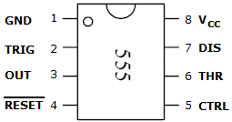
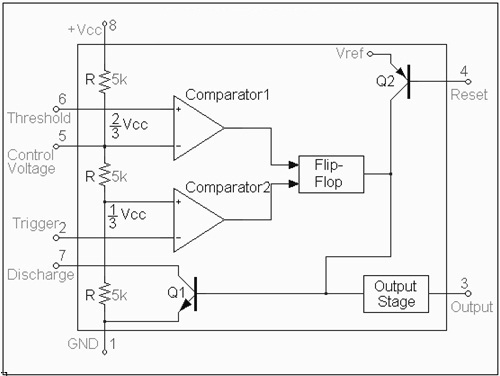
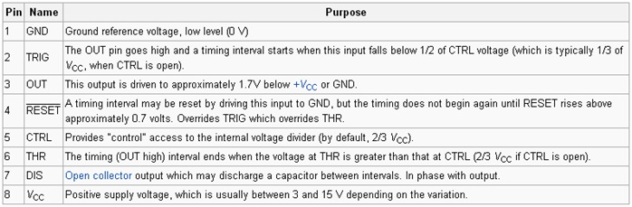

To design and study of Astable Multivibrator using 555 Timer ICs.
Introduction
A multivibrator is an electronic circuit used to implement a variety of simple two-state systems such as oscillators, timers and flip-flops. It is characterized by two amplifying devices (transistors, electron tubes or other devices) cross-coupled by resistors or capacitors. The name "multivibrator" was initially applied to the free-running oscillator version of the circuit because its output waveform was rich in harmonics.
|  |
|  |
|  |